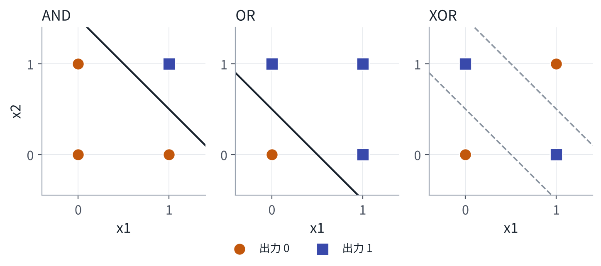
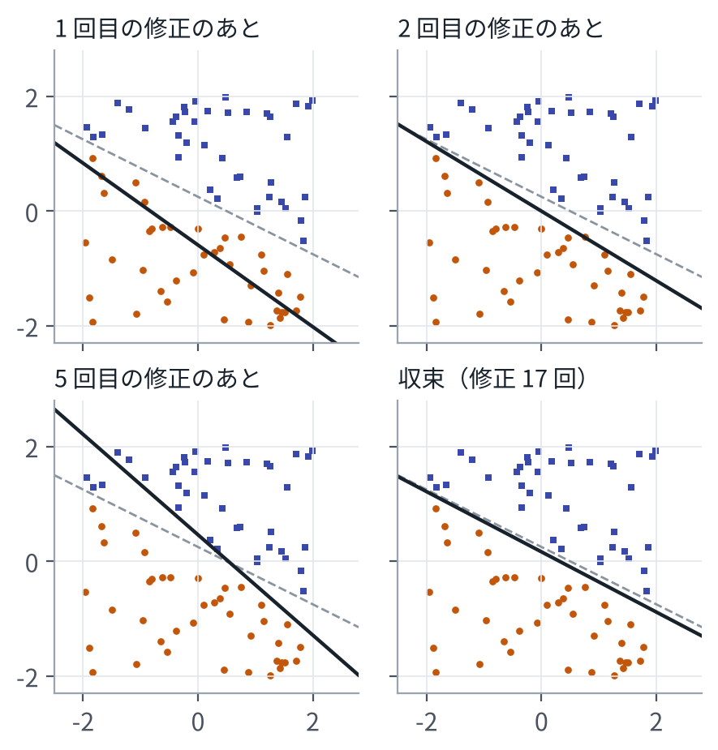

目次
11 個のニューロンの計算
入力を \(d\) 個の数の並び（ベクトル）\(x = (x_1, \dots, x_d)\) とする。ニューロンは、入力ごとに重み \(w_i\) を掛けて足し、さらに \(b\) を足して \(z\) を作る。\(z\) が 0 以上なら 1、負なら 0 を出す。
\[ \begin{aligned} z &= w_1 x_1 + \cdots + w_d x_d + b = w^\top x + b\\ y &= \mathbb 1[z \ge 0] \end{aligned} \]\(\mathbb 1[\cdot]\) は、中の条件が成り立てば 1、成り立たなければ 0 を表す。\(w^\top x\) は、2 つのベクトルの成分ごとの積の和（内積）である。\(b\) をバイアスという。「和がしきい値 \(\theta\) を超えたら 1」と書くこともあるが、\(\theta = -b\) と置けば同じことである。
境目は直線になる
入力が 2 個なら、入力は平面の点である。出力が 1 になる点と 0 になる点の境目は、\(w^\top x + b = 0\) を満たす点の集まりで、これは直線である（入力が 3 個なら平面、もっと多ければ超平面）。
図 2 の 2 つの性質は、式から確かめられる。境目の上の 2 点 \(p, q\) では \(w^\top p + b = w^\top q + b = 0\) なので、引いて \(w^\top (p - q) = 0\)、つまり \(w\) は境目の向き \(p - q\) と直角である。また、点 \(x\) から境目までの距離（\(w\) の向きを正として測る）は、次のようになる。
\[ \text{距離} = \frac{w^\top x + b}{\|w\|} \]境目の上の点 \(p\) から \(x\) へのベクトルを、\(w\) の向きの長さ 1 のベクトル \(w/\|w\|\) に射影すると、\(w^\top (x - p)/\|w\| = (w^\top x + b)/\|w\|\) になるからである。\(z = w^\top x + b\) は、境目からの距離に \(\|w\|\) を掛けたものと見ることができる。この見方は、あとのノビコフの定理で使う。
2重みを手で入れて、論理回路を作る
入力を 0 か 1 の 2 個にすると、点は \((0,0), (0,1), (1,0), (1,1)\) の 4 つしかない。重みと \(b\) を次のように選ぶと、論理の AND、OR、NAND（AND の否定）になる。
| 回路 | 重み \(w\) | \(b\) | 出力（入力 00, 01, 10, 11） |
|---|---|---|---|
| AND | \((1, 1)\) | \(-1.5\) | 0, 0, 0, 1 |
| OR | \((1, 1)\) | \(-0.5\) | 0, 1, 1, 1 |
| NAND | \((-1, -1)\) | \(1.5\) | 1, 1, 1, 0 |
たとえば AND では、\(x_1 + x_2 - 1.5\) が 0 以上になるのは \(x_1 = x_2 = 1\) のときだけである。図 3 は、それぞれの境目を描いたものである。

NAND があれば、それを組み合わせて、どんな論理回路でも作れる（計算機の回路の基本的な事実である）。1943 年の McCulloch と Pitts の主張は、この意味で「ニューロンをつなげば何でも計算できる」というものだった[1]。ただし、そのためにはニューロンを何段にも重ねる必要がある。
3パーセプトロンの学習則
次に、重みを例から学習させる。正解のラベルを \(t \in \{+1, -1\}\) で表す（出力 1 を \(+1\)、出力 0 を \(-1\) とする）。式を短くするため、入力に 1 を付け足して \(\tilde x = (x, 1)\)、重みに \(b\) を付け足して \(\tilde w = (w, b)\) と書く。すると \(z = \tilde w^\top \tilde x\) で、予測が正しいのは \(t\, \tilde w^\top \tilde x > 0\) のときである。
Rosenblatt の学習則は、例を 1 つずつ見て、間違えたときだけ重みを直す[2]。
\[ \begin{aligned} &t\, \tilde w^\top \tilde x \le 0 \ \text{（間違い）のとき}\\ &\qquad \tilde w \leftarrow \tilde w + t\, \tilde x \end{aligned} \]直すと、その例について \(t\, \tilde w^\top \tilde x\) は次のように増える（\(t^2 = 1\) を使う）。
\[ t\, (\tilde w + t \tilde x)^\top \tilde x = t\, \tilde w^\top \tilde x + \|\tilde x\|^2 \]つまり、1 回直すごとに、その例は正しい側へ \(\|\tilde x\|^2\) だけ近づく。1 回で正しくなるとは限らないし、別の例が間違いに変わることもある。それでも全体として止まることを、次の節で示す。
演習では、直線 \(x_1 + 2x_2 = 0.5\) の両側に、0.1 以上のすき間をあけて置いた 80 個の点を、この学習則で分ける。図 5 は、学習の途中の境目である。合計 17 回の修正で、すべての点を正しく分ける直線に止まった。

この学習則は、損失 \(\ell(\tilde w) = \max(0, -t\, \tilde w^\top \tilde x)\) に、学習率 1 の確率的勾配降下法を使ったものとも見られる[3]。間違えたときの勾配が \(-t \tilde x\) だからである。また、\(\tilde w = 0\) から始めると、学習率を何にしても、重み全体が定数倍になるだけで、予測は変わらない。
4必ず止まることの証明：ノビコフの定理
1962 年に Novikoff が示した定理は、データが直線（超平面）で分けられるなら、パーセプトロンの修正の回数には上限がある、というものである[4]。
定理。すべての例で \(\|\tilde x_i\| \le R\) とする。また、長さ 1 のベクトル \(u\) と \(\gamma > 0\) があって、すべての例で \(t_i\, u^\top \tilde x_i \ge \gamma\) が成り立つとする（\(u\) の境目で、余白 \(\gamma\) を残して分けられる）。このとき、\(\tilde w = 0\) から始めた学習則の修正の回数 \(M\) は、次を満たす。
\[ M \le \left(\frac{R}{\gamma}\right)^2 \]証明。\(k\) 回目の修正のあとの重みを \(\tilde w_k\) とする（\(\tilde w_0 = 0\)）。\(k\) 回目の修正が例 \((\tilde x, t)\) で起きたとする。
(1) \(u\) の向きの成分は、修正のたびに \(\gamma\) 以上増える。
\[ \begin{aligned} u^\top \tilde w_k &= u^\top \tilde w_{k-1} + t\, u^\top \tilde x\\ &\ge u^\top \tilde w_{k-1} + \gamma\\ \Longrightarrow\quad u^\top \tilde w_M &\ge M \gamma \end{aligned} \](2) 長さの 2 乗は、修正のたびに \(R^2\) までしか増えない。
\[ \begin{aligned} \|\tilde w_k\|^2 &= \|\tilde w_{k-1}\|^2 + 2t\, \tilde w_{k-1}^\top \tilde x\\ &\qquad + \|\tilde x\|^2 \\ &\le \|\tilde w_{k-1}\|^2 + R^2\\ \Longrightarrow\quad \|\tilde w_M\|^2 &\le M R^2 \end{aligned} \]3 行目で、\(2t\, \tilde w_{k-1}^\top \tilde x\) の項を捨てた。修正は間違えたときにしか起きないので、\(t\, \tilde w_{k-1}^\top \tilde x \le 0\) だからである。
(3) コーシー・シュワルツの不等式 \(u^\top \tilde w \le \|u\|\,\|\tilde w\| = \|\tilde w\|\) で (1) と (2) をつなぐ。
\[ \begin{aligned} &M\gamma \le u^\top \tilde w_M \le \|\tilde w_M\| \le \sqrt{M}\, R\\ &\Longrightarrow\quad M \le \left(\frac{R}{\gamma}\right)^2 \qquad \blacksquare \end{aligned} \]直感的には、重みは \(u\) の向きに毎回 \(\gamma\) ずつ進む（修正の回数に比例して伸びる）が、長さは \(\sqrt{M}\) に比例してしか伸びない。修正を続けると、重みの向きが \(u\) にいくらでも近づくことになるが、向きの近さ（コサイン）は 1 を超えられないので、どこかで止まる。上限にはデータの数も次元も入っていない[3]。
演習で確かめる
図 5 のデータでは、\(R = 2.94\)、本当の境目で測った余白は \(\gamma = 0.1108\) で、上限は \((R/\gamma)^2 \approx 705\) 回になる。実際の修正は 17 回だった。上限は最悪の場合の値なので、実際はずっと少ない。
すき間（境目から点までの最小の距離）を変えると、次のようになる。点は 1000 個で、データと並べ方を変えて 100 回ずつ平均した。
| すき間 | 修正の回数（平均） | 最大 | 上限 \((R/\gamma)^2\) |
|---|---|---|---|
| 0.40 | 5.1 | 10 | 57 |
| 0.20 | 10.3 | 31 | 225 |
| 0.10 | 17.6 | 46 | 885 |
| 0.05 | 36.0 | 77 | 3,427 |
| 0.02 | 73.0 | 178 | 19,469 |
| 0.01 | 129.6 | 390 | 72,487 |
すき間を半分にすると、上限は 4 倍になる（\(\gamma\) が 2 乗で効く）。この実験では、実際の回数はほぼ 2 倍ずつ増えた。すき間が狭いほど、境目の近くの点の扱いに手間取る、という傾向は上限と同じである。
5直線で分けられないもの：XOR
XOR は、2 つの入力のうち、ちょうど 1 つが 1 のときだけ 1 を出す。図 3 の右のように、出力 1 の点（左上と右下）と出力 0 の点（左下と右上）が、たすき掛けに並んでいる。1 個のニューロンでは表せないことを、式で示す。
証明。\(y = \mathbb 1[w_1 x_1 + w_2 x_2 + b \ge 0]\) が XOR に一致したとする。4 つの点について、次が成り立つ必要がある。
\[ \begin{aligned} (0,0) \to 0:&\quad b < 0\\ (1,0) \to 1:&\quad w_1 + b \ge 0\\ (0,1) \to 1:&\quad w_2 + b \ge 0\\ (1,1) \to 0:&\quad w_1 + w_2 + b < 0 \end{aligned} \]2 行目と 3 行目を足すと \(w_1 + w_2 + 2b \ge 0\)、つまり \(w_1 + w_2 + b \ge -b\) である。1 行目から \(-b > 0\) なので \(w_1 + w_2 + b > 0\) となり、4 行目と矛盾する。\(\blacksquare\)
演習で、XOR に学習則を使うと、1 周（4 つの例を 1 回ずつ見る）ごとに 4 回とも間違え、100 周しても止まらない。重みは \((0,0,0) \to (0,0,-1) \to (0,1,0) \to (1,1,1) \to (0,0,0)\) と回り、1 周で元に戻る。重みを \(-2\) から \(2\) まで 0.1 刻みで総当たりしても、4 点のうち当てられるのは最大 3 点だった。
入力が \(d\) 個のとき、「1 の個数が奇数なら 1」というパリティも、同じ理由で 1 個のニューロンでは表せない（XOR は \(d = 2\) のパリティである）。Minsky と Papert の本は、この種の限界を詳しく調べたものだった[5]。
6しきい値をなめらかにしても同じ
しきい値のかわりに、シグモイド関数 \(\sigma(z) = 1/(1 + e^{-z})\) を使い、出力を「1 である確率」と読むことにする。これは 2 章の softmax 回帰の、クラスが 2 つの場合（ロジスティック回帰）である。交差エントロピーを勾配降下法で小さくできる。
\[ \begin{aligned} p &= \sigma(w^\top x + b)\\ L &= -\frac{1}{N}\sum_{i} \Big[t_i \log p_i\\ &\qquad + (1 - t_i) \log (1 - p_i)\Big] \end{aligned} \]（ここでは正解を \(t_i \in \{0, 1\}\) で表す。）しかし、確率が 0.5 になる境目は \(w^\top x + b = 0\) で、やはり直線である。演習の結果は次のとおりである。
- AND：出力の確率は \((0.00, 0.01, 0.01, 0.99)\) で、正解率 100%。
- XOR：出力の確率は 4 点とも 0.50 で、正解率 50%。
XOR の結果が「全部 0.5」になる理由は計算できる。\(w = 0, b = 0\) では 4 点とも \(p = 0.5\) で、損失の勾配 \(\frac{1}{4}\sum_i (p_i - t_i)\, \tilde x_i\) は
\[ \begin{aligned} &\tfrac14\Big[\,0.5\,(0,0,1) - 0.5\,(0,1,1)\\ &\quad - 0.5\,(1,0,1) + 0.5\,(1,1,1)\Big]\\ &= (0, 0, 0) \end{aligned} \]となる。ロジスティック回帰の交差エントロピーは重みについて凸（谷が 1 つしかない）なので、勾配が 0 の点が最小である。直線で分けられないデータに対して、1 個のニューロンができる最善は「どの点も五分五分と答える」ことになる。
71 個では足りない、では何を足すか
入力をそのまま使う 1 個のニューロンは、直線（超平面）しか引けない。これを越える方法は 2 つある。
- 入力から特徴を作ってから、ニューロンに入れる。たとえば XOR は、特徴 \(x_1 x_2\) を足して \((x_1, x_2, x_1 x_2)\) の 3 入力にすれば、1 個のニューロンで表せる（確かめる問題 3）。1 章で \(x^2, x^3\) を足したのと同じ考え方である。Mark I の A ユニットは、乱数で決めた特徴をたくさん作る役だった（3.1 節）。ただし、どんな特徴が要るかを人が考えるか、乱数に任せるしかない。
- 特徴を作る部分も、ニューロンにして学習させる。ニューロンを層に並べて重ねれば、前の層の出力が後ろの層の特徴になる。これが 3.3 節の多層のネットで、その学習に 3.4 節の逆伝播を使う。
8演習
演習 3.2パーセプトロン
論理回路、学習則、ノビコフの上限、XOR、ロジスティック回帰を、numpy で確かめる。数秒で終わる。
python3 vla_math/ch03_2_perceptron.py出力の一部：
(2) パーセプトロンの学習則で、2 つの集まりを分ける
点 80 個. 1 周ごとの誤りの回数: [9, 5, 1, 2, 0]
誤りの合計 17 回で収束した（最後の 1 周で誤り 0）
ノビコフの上限 (R/γ)²: R = 2.94, γ = 0.1108（本当の境目で測った余白）→ 705 回
(3) XOR に同じ学習則を使う（100 周）
1 周ごとの誤りの回数（最初の 10 周）: [4, 4, 4, 4, 4, 4, 4, 4, 4, 4]
100 周たっても誤りは 0 にならない（最後の周の誤り 4 回、合計 400 回）
重みを細かく総当たりしても、4 点のうち正解できるのは最大 3 点
(4) シグモイドと交差エントロピー（ロジスティック回帰）で学習する
AND: 出力の確率 [0.0, 0.01, 0.01, 0.99]、正解率 100%
XOR: 出力の確率 [0.5, 0.5, 0.5, 0.5]、正解率 50%
見るところ：
- (2) 1 周目に 9 回直し、5 周目で 1 回も間違えなくなる。上限 705 回よりずっと少ない。
- (3) XOR では、毎周ちょうど 4 回間違える。重みが 1 周で元に戻っているからである。
変えてみる：make_separable のすき間を 0 にして（点を境目のすぐそばにも置く）、修正の回数がどう変わるかを見る。XOR の入力に 3 つ目の特徴 \(x_1 x_2\) を足して、学習則が止まることを確かめる。
9まとめ
- 1 個のニューロンは \(y = \mathbb 1[w^\top x + b \ge 0]\) で、境目は直線（超平面）である。\(w\) は境目に直角で、\(z = w^\top x + b\) は境目からの距離の \(\|w\|\) 倍である。
- パーセプトロンの学習則は、間違えたときだけ \(\tilde w \leftarrow \tilde w + t\tilde x\) と直す。余白 \(\gamma\) で分けられるデータなら、修正は \((R/\gamma)^2\) 回以下で止まる。
- XOR は、1 個のニューロンでは表せない。しきい値をシグモイドにしても、境目が直線である限り同じである。越えるには、特徴を作る層が要る。
10確かめる問題
- 重みと \(b\) を決めて、NOR（2 つの入力がどちらも 0 のときだけ 1）を作れ。
- 1 回の修正で、その例の \(t\, \tilde w^\top \tilde x\) が \(\|\tilde x\|^2\) だけ増えることを確かめよ。
- 3 つの入力 \((x_1, x_2, x_1 x_2)\) を使えば、XOR を 1 個のニューロンで表せる。重みと \(b\) を 1 組求めよ。
- ノビコフの定理の証明で、「間違えたときだけ直す」ことは、どの式で使ったか。
- 学習則を \(\tilde w \leftarrow \tilde w + \eta\, t\, \tilde x\)（\(\eta > 0\)）に変えても、\(\tilde w = 0\) から始めれば予測は \(\eta\) によらない。なぜか。
11読むもの
※参考文献
- W. S. McCulloch and W. Pitts, "A logical calculus of the ideas immanent in nervous activity," Bulletin of Mathematical Biophysics 5, 115–133, 1943.
- F. Rosenblatt, "The perceptron: A probabilistic model for information storage and organization in the brain," Psychological Review 65(6), 386–408, 1958.
- D. Chiang, "Theory of Neural Networks," 講義ノート 2 章（Perceptrons）, University of Notre Dame, 2024. https://www3.nd.edu/~dchiang/teaching/tonn/2024/chapter2.pdf
- A. B. J. Novikoff, "On convergence proofs on perceptrons," Proceedings of the Symposium on the Mathematical Theory of Automata, 1962.
- M. Minsky and S. Papert, "Perceptrons: An Introduction to Computational Geometry," MIT Press, 1969.
- I. Goodfellow, Y. Bengio and A. Courville, "Deep Learning," MIT Press, 2016. 本の全文が公開されている。https://www.deeplearningbook.org/